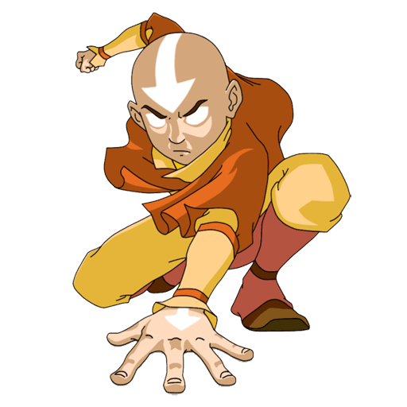

Aang
Aang foi um Nômade do Ar nascido em 12 AG e o Avatar durante o conflito conhecido como Guerra dos Cem Anos.Como o Avatar de seu tempo, foi o único capaz de realizar a dobra dos quatro elementos. Ele também foi um dos poucos Avatares, e o primeiro em vários ciclos, a aprender a antiga arte da Dobra de Energia.

Dominação
Como reencarnação da entidade conhecida como Avatar, Aang possuía o poder de dobrar todos os quatro elementos, fazendo dele o mais poderoso dobrador de seu tempo
Habilidade Especial
Como Avatar, Aang conseguia contatar suas vidas passadas para buscar orientação e conselhos. Foi o primeiro Avatar a utilizar a técnica Dobra de Energia.